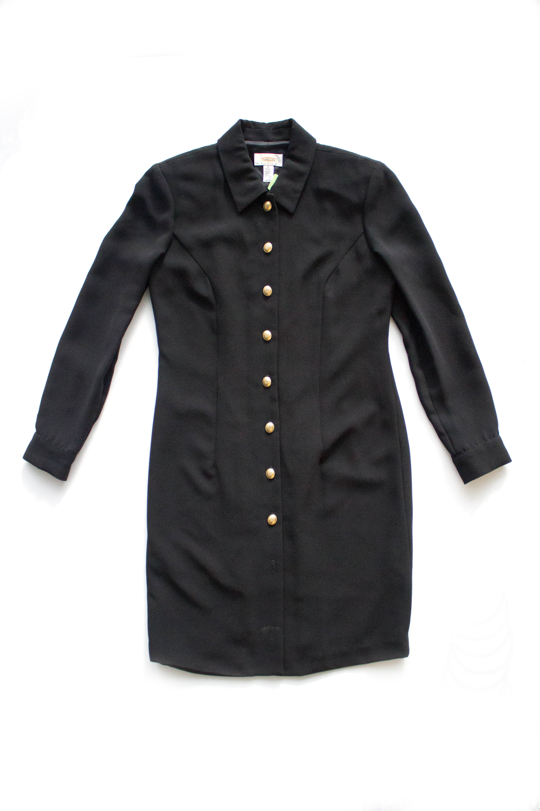

As Jane sat admiring the unique fluffy turquoise pattern she had stitched on the fancy jacket, she began to think about the changes that her mill in Lowell, Massachusetts had gone through in the time since she had started working there. The work she did 25 years ago, cutting hundreds of copies of a single design, bore little resemblance to what she was doing now, sewing unique patterns on low-volume pieces. The mill itself had changed. It was once floor after floor of big loud looms, large-scale machines, and two shifts of workers. Today there are fewer machines and only 50 people knitting and embroidering in relative silence. Many of the big clothing retailers in the country used to have their textiles manufactured in this very mill, with hundreds of people working to make thousands of copies. All of this changed when Washington signed NAFTA and other trade agreements in the early 90s allowing foreign textiles to be imported freely. The big retailers stopped manufacturing and left within months, not even bothering to answer the mill’s calls for orders from then on.
Even as the mill tried to find new customers by lowering costs, it could never match Chinese prices, made low by plentiful cheap labor. Over 70% of the mill’s employees had to be laid off and the existence of the mill itself came into question. Jane remembered her worry that she may be left unemployed. It prompted her to attend embroidery classes to update her skills and stay relevant. The Made in Massachusetts/America tags in local stores were replaced with those saying “Made in China.” It was only through the use of new materials and mechanization that the mill was able to stave off bankruptcy.
In the late 2000s, some positive signs of manufacturing returning to America were visible, people were starting to value the craftsmanship and quality of textiles, which mass manufacturing with underpaid labor could not provide. Small companies with original ideas started popping up with orders. Jane’s own mill, which once had rejected low-volume orders, was beginning to open up to these opportunities. These pieces with their unique designs paid well and kept the mill running. With its heritage and knowledge of textiles, Jane’s mill was able to attract and provide a one-stop solution to many companies, which could instead focus on sourcing and selling. This brought life back to the mill and Jane started to once again see the “Made in Massachusetts, USA” tags proudly displayed on clothes.
There’s a moral to the mill’s and Jane’s transformative journey. In order to stay competitive and viable, manufacturing plants in developed nations must evolve. This Lowell mill and Jane herself were able to stay relevant by evolving to leverage their strengths.